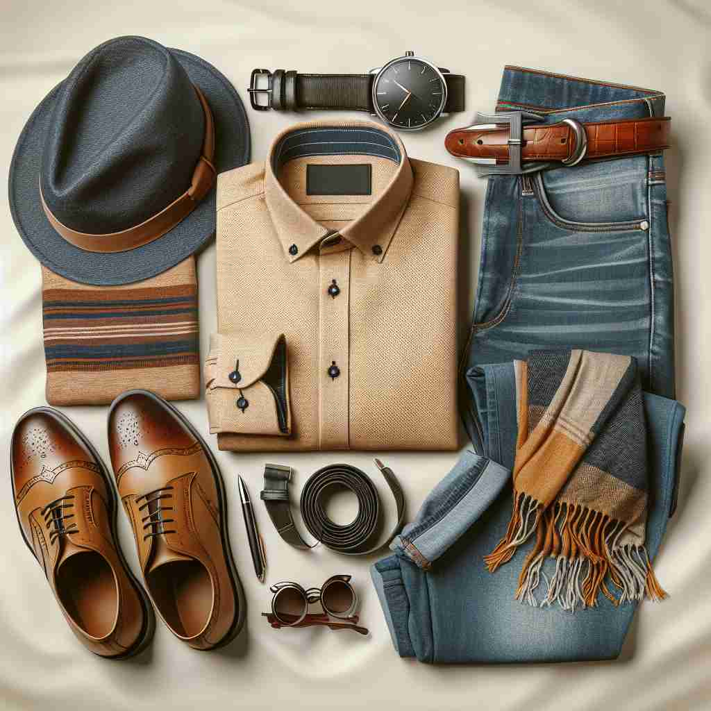

💬 He wore a stylish outfit for the party tonight. 他今晚为派对穿了一套时尚的服装。

💬 He loves wearing a cool casual outfit on weekends. 他喜欢在周末穿一套酷炫的休闲服。
💬 He wore a stylish outfit for the party tonight. 他今晚为派对穿了一套时尚的服装。
💬 He loves wearing a cool casual outfit on weekends. 他喜欢在周末穿一套酷炫的休闲服。
🧠 将'outfit'想象成一个为特定目的而组合在一起的套装。无论是衣服、人员还是设备，都可以看作是为某个场合或活动而精心搭配的组合。这个核心概念贯穿了'outfit'的各种用法，有助于更好地理解和记忆它的多重含义。
🔈 ['aʊtfɪt]
🗝️ n. a set of clothes worn together, especially for a particular occasion or purpose 一套餐服，特别是为特定场合或目的而穿着的。
🎭 想象一场盛大的婚礼上，新娘走进婚礼现场。她穿着一身精心搭配的婚纱，带着闪亮的珠宝，展示了典雅和美丽的传统新娘装。这就是'outfit'作为一套特定场合服装的含义。
💬 She bought a new outfit for the party. 她为派对买了一套新衣服。
🌳 由前缀 "out-"（外部，超过）和词根 "fit"（合适，装备）组成，表示一整套合适穿着或装备。
💡 记忆 "outfit" 时，可以联想为 "out" + "fit"，即适合在外面穿的整套服装或装备，通过想象一整套装备适合在外部活动记住这个单词。
🗝️ n. a group of people forming a unit, especially for a particular purpose 一群人为特定目的组成的单位
🎭 在一个音乐节上，一支乐队正在舞台上演奏。他们团结一致，各自分工明确，经过多次排练展现出完美的默契。这个乐队便是一个'outfit'，指为了特定目的而组成的小组或单位。
💬 The company hired a new marketing outfit to handle their advertising. 公司聘请了一家新的市场营销团队来处理他们的广告。
🤔 从一套衣服扩展到一组人，都是为特定目的而组合在一起的单元
🗝️ n. equipment or gear needed for a particular activity 特定活动所需的设备或装备
🎭 在一个登山营地，一名登山者正在检查他的背包，确保所有装备都齐全。他有很好的防寒衣物、专业的登山靴和安全绳索，这是他的登山'outfit'，意指为了活动而准备的装备。
💬 He bought a complete camping outfit for his hiking trip. 他为他的徒步旅行购买了一整套露营装备。
🤔 从一套衣服扩展到一套设备，都是为特定活动而准备的组合
🗝️ v. to provide with clothes or equipment 提供衣物或设备
🎭 在一个剧院后台，服装设计师正在紧张地为演员穿上戏服，调整每个细节，确保一切完美到位。这就是'outfit'作为动词，意为给某人提供特定的服装或装备。
💬 The company outfitted all its employees with new uniforms. 公司为所有员工配备了新制服。
🤔 从名词的"一套衣服"转变为动词，表示提供这套衣服或装备